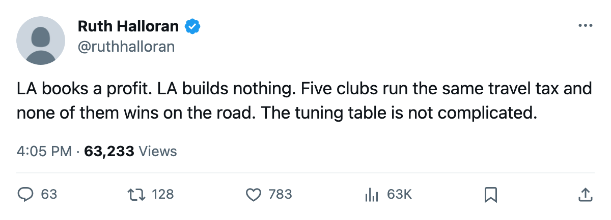

The Road Tax: what a level-zero travel budget costs Los Angeles on a night away
Five clubs carry the league's maximum road penalty. None won 20 of 41 on the highway.
 Ruth HalloranBusiness of hockey · The Building
Ruth HalloranBusiness of hockey · The Building
 Los Angeles Kings finished the regular season with a live building sum of -19, the lowest of the thirty clubs, and booked a $16.34M profit. No upgrade touched Los Angeles between the record opening on December 4 and the last game on April 6.
Los Angeles Kings finished the regular season with a live building sum of -19, the lowest of the thirty clubs, and booked a $16.34M profit. No upgrade touched Los Angeles between the record opening on December 4 and the last game on April 6.
LA's travel budget sits at level 0, which carries a modifier of -6 to every attribute on the road. The club went 15-26 away from its own building.
Five clubs share that same -6 travel modifier. None of them reached 20 wins on the highway.
| club | travel | road record |
|---|---|---|
 Detroit Red Wings Detroit Red Wings | 0 | 18-23 |
 Montreal Canadiens Montreal Canadiens | 0 | 12-29 |
 Atlanta Thrashers Atlanta Thrashers | 0 | 17-24 |
| Los Angeles Kings | 0 | 15-26 |
 Minnesota Wild Minnesota Wild | 0 | 18-23 |
 Colorado Avalanche runs its travel at level 4, a modifier of +0, and went 29-12 away.
Colorado Avalanche runs its travel at level 4, a modifier of +0, and went 29-12 away.  Boston Bruins is the only club in the league above par at travel 5 (+1) and went 25-16 on the road.
Boston Bruins is the only club in the league above par at travel 5 (+1) and went 25-16 on the road.
Two rooms at zero, no track moving
LA's workout room also sits at level 0 (-5) and its equipment at 1 (-4), practice at 1 (-4). Boston Bruins and Colorado Avalanche carry the same workout room at zero, but they run travel budgets that offset it. Their live sums land at -16 and -14. LA's lands at -19.
The locker room is at 3 and the scouting office at 1. Neither track moves a rating in this build. Their modifiers are stored in the tuning table and nothing in the pipeline reads them.
The club's on-the-ice facilities term averages -2.66 across its own roster. That is the number the rating model produces when a player looks at what his club has built.
The money did not become a room
Los Angeles Kings pays $52.43M in salary. The gate runs $73.32M in revenue on an average crowd of 13627 at $78 a seat. The $16.34M profit was not turned into a room that moves a number.
Payroll and buildings are unrelated across the league. Detroit Red Wings carries the highest payroll at $80.89M and runs a live sum of -13.  Toronto Maple Leafs, at $60.04M, runs the league's best building at -5.
Toronto Maple Leafs, at $60.04M, runs the league's best building at -5.  Edmonton Oilers pays $36.81M and sits at -16.
Edmonton Oilers pays $36.81M and sits at -16.
Los Angeles earned 79 points, 14 behind the 93  Phoenix Coyotes needed for the last playoff berth in the West.
Phoenix Coyotes needed for the last playoff berth in the West.
Hames McKenna has run the club through 25-37-11 at a prestige standing of 428. Between the opening of the record and the close of the season, sixteen clubs filed at least one move into their rooms. Los Angeles was not among them.
